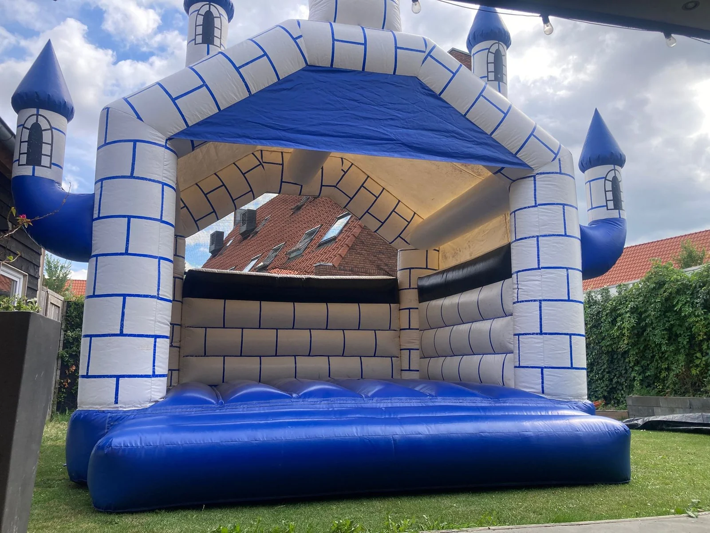
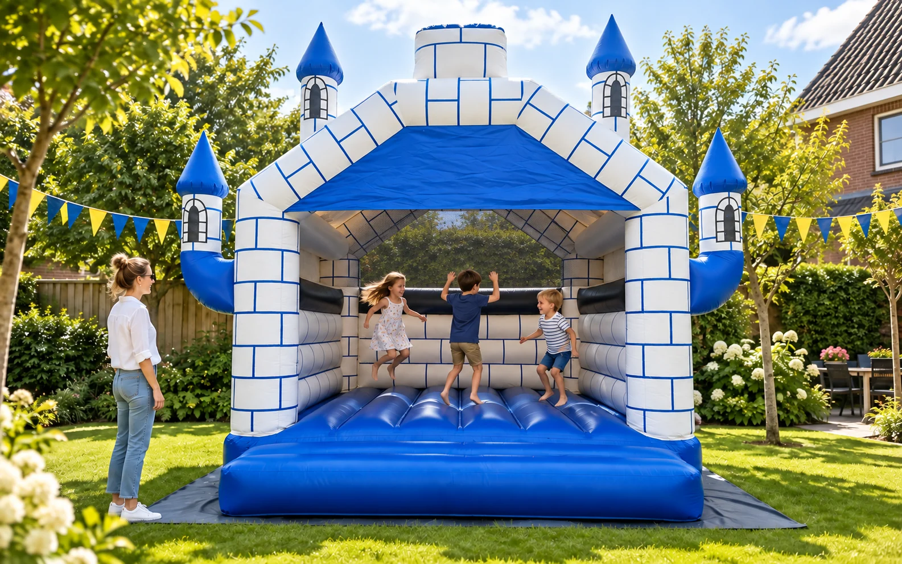
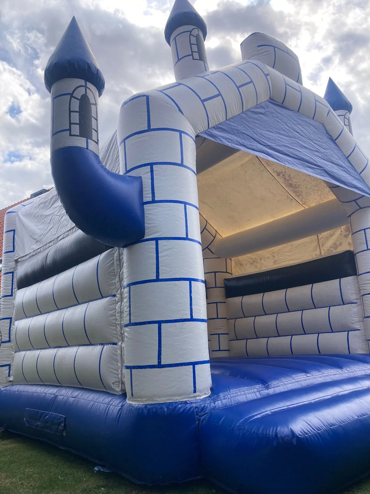
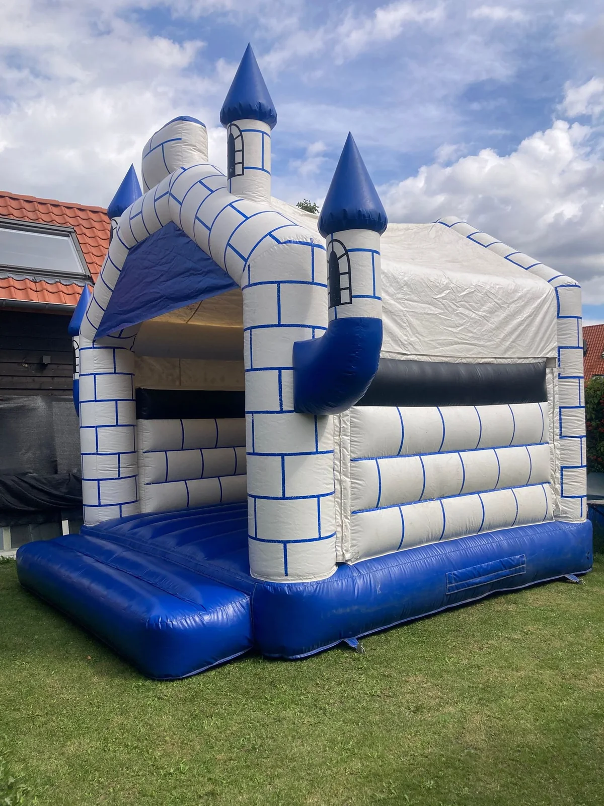
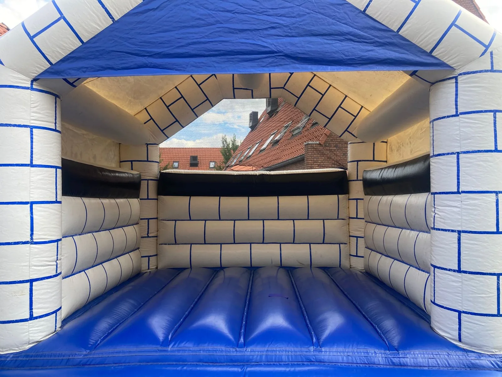
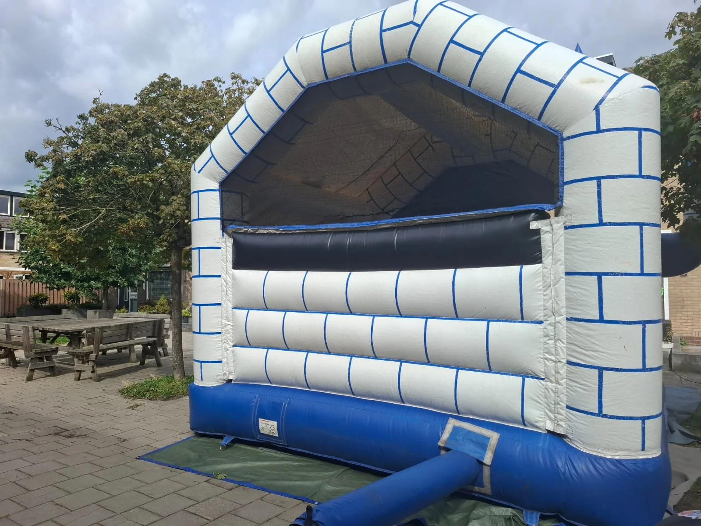

Groot plezier.
Goed geregeld.
Een blauw-wit kasteel voor een onvergetelijk kinderfeestje. Wij bezorgen en begeleiden de op- en afbouw.
Bij beide opties komt €50 borg bovenop de huur.
Inclusief bezorgen en begeleide op- en afbouw binnen 10 km van Wamel of Nieuwegein.
Vraag je datum aanJe ontvangt een persoonlijke bevestiging.

- Afmetingen
- 4,40 × 4,80 m
- Hoogte
- 4,50 m
- Uitvoering
- Dicht dak & achternet
Een kasteel vol plezier.
Feestsfeer en echte foto’s van ons kasteel.





Jij het feest.
Wij het springkussen.
- 01
Kies je datum
Stuur je datum, huurperiode en locatie. We bevestigen de beschikbaarheid persoonlijk.
- 02
Wij komen langs
We bezorgen en begeleiden de opbouw. Eén volwassene helpt mee.
- 03
Geniet van het feest
Na afloop begeleiden we ook de afbouw, samen met je helper.
Goed om te weten
Hoeveel ruimte is er nodig?
Het kasteel is 4,40 m breed, 4,80 m lang en 4,50 m hoog. Houd rondom extra ruimte vrij voor plaatsing en verankering. De plek moet bereikbaar zijn en op privéterrein liggen. Twijfel je? Stuur ons een foto.
Wat regel ik zelf?
Een geaard 230V-stroompunt met minimaal 1000 W vrije capaciteit en één volwassen helper bij zowel op- als afbouw. Tijdens het springen houdt een verantwoordelijke volwassene voortdurend toezicht.
Betalen, bezorgen en langer huren
De huur is €95 voor één dag of €150 voor twee aansluitende dagen. Daar komt €50 borg bovenop: samen €145 of €200. Je betaalt de huur vóór de opbouw, bijvoorbeeld via een betaalverzoek, en de borg vooraf contant. Bezorgen en begeleide op- en afbouw binnen 10 km van Wamel of Nieuwegein zijn inbegrepen. Verder weg of langer dan twee dagen? We spreken de prijs vooraf met je af.
Wanneer krijg ik de borg terug?
Je krijgt de €50 borg bij het ophalen terug na controle van het springkussen. Is er schade? Dan bespreken we die met je voordat we iets op de borg inhouden.
Wat als ik wil annuleren?
Laat het ons zo snel mogelijk weten. Je betaalt de huur pas vóór de opbouw; als je nog niet hebt betaald, hoeft er niets terugbetaald te worden.
Wat als het weer tegenzit?
Bij verwachte regen, onweer, windkracht 4 of hoger of andere onveilige omstandigheden bouwen we niet op. Bij regen, harde windstoten, onweer of windkracht 4 of hoger tijdens de huur stop je direct met springen. Dat geldt ook met het dichte dak. Zeggen wij vóór de opbouw af vanwege onveilig weer, dan krijg je eventueel betaalde huur en borg terug.
De afspraken voor veilig springen
- Maximaal 8 kinderen tegelijk; volwassenen springen niet mee.
- Voortdurend toezicht door een verantwoordelijke volwassene.
- Grote en kleine kinderen bij voorkeur apart laten springen.
- Schoenen, sieraden en scherpe voorwerpen uit.
- Het kussen en de verankering niet verplaatsen of aanpassen.
- Alleen op de afgesproken privé-opstellocatie; geen openbaar of vrij toegankelijk gebruik.
Bij de opbouw nemen we de regels samen door.
Welke dag wordt
jouw feestje?
Stuur je aanvraag. Wij laten je weten of het kasteel beschikbaar is.
Je reservering is definitief na onze persoonlijke bevestiging.